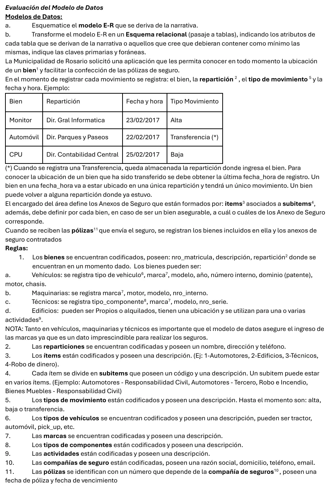

Municipalidad de Rosario
Final, 23/02/2026
Enunciado


SQL FINAL 23/2/2026
(2 puntos) 1-Por un trabajo de monitoreo de datos, nos solicitan un listado de solicitudes de puestos que al 01/01/2017 no se haya realizado ningún proceso de selección. Mostrar solicitudes de puestos que no hayan sido canceladas. Indicar descripción del área, puestos y fecha de solicitud
(2 puntos) 2-Indicar por estado la cantidad de procesos de solicitudes no canceladas cuya cantidad supere 3. No incluir los estados “contrato” y “rechazo”. Mostrar: Codigo de estado, descripción, cantidad de solicitudes.
(2 puntos) 3-PROCEDIMIENTO: COMPARATIVA DE SALARIOS Desarrollar un procedimiento que dado un puesto, un área y una fecha, muestre el salario por hora a esa fecha, el salario actual y el porcentaje de aumento entre ambos salarios. Probar el procedimiento realizando la llamada con los siguientes datos: Area: ‘Producción’, puesto: ‘operario’ y fecha: 12/12/2026.
(4 puntos) 4-Realice la creación, inserción de registros y modificación de las tablas que se requieran con sus correspondientes claves primarias y foráneas, según el siguiente requerimiento: Cada empleado corresponde a una única categoría. De las categorías se registran, código y descripción. Categoría 1- Empleado gerencial Categoría 2. Empleado técnico. Se deberá asignar la categoría a los empleados según sus puestos de trabajo actuales: Los que tienen puesto 1- Jefe de Producción y 14- Director de sistemas se categorizan como 1-Empleado Gerencial. El resto serán Categoría 2- Empleado Técnico
Preguntas con opciones
Salen de este examen, algunas adaptadas. Dejalas para el final, porque las opciones pueden dar pistas.
- 1
clientes LEFT JOIN contratos: Beto no tiene contratos. ¿Qué pasa con Beto?Se tomó: Final 23/02/2026, adaptada
El
LEFT JOINconserva todas las filas de la izquierda. ConINNER JOINno aparecería. - 2
Dos cajeros extraen dinero de la misma cuenta al mismo tiempo y el saldo queda mal. ¿Qué faltó?
Se tomó: Final 23/02/2026
Es una actualización perdida. Se evita con transacciones y bloqueos o con el nivel de aislamiento adecuado.
- 3
¿Qué regla garantiza que un valor en una tabla secundaria exista en la primaria?
Se tomó: Final 23/02/2026
Es la que nace de definir una clave foránea.
Propuesta de respuesta
Respuesta no verificada. La propuso Luta Studios con inteligencia artificial y ningún docente la revisó. Puede tener errores.
a) Modelo E-R
El mín:máx pegado a una entidad dice cuántas de esa entidad le tocan a una de la otra punta, como en los DER resueltos del Drive. Tocá el dibujo para verlo en pantalla completa.
b) Pasaje a tablas
La jerarquía se pasa completa, con una tabla por subclase. La repartición actual de un bien no se guarda. Sale del último movimiento.
marca (codigo, descripcion)
CP -> codigo
tipo_vehiculo (codigo, descripcion)
CP -> codigo
tipo_componente (codigo, descripcion)
CP -> codigo
actividad (codigo, descripcion)
CP -> codigo
reparticion (codigo, nombre, direccion, telefono)
CP -> codigo
tipo_movimiento (codigo, descripcion)
CP -> codigo
bien (codigo, nro_matricula, descripcion, tipo_bien)
CP -> codigo
vehiculo (codigo_bien, modelo, anio, nro_interno, dominio, motor, chasis, codigo_tipo_vehiculo, codigo_marca)
CP -> codigo_bien
CF(codigo_bien) -> bien(codigo) NN
CF(codigo_tipo_vehiculo) -> tipo_vehiculo(codigo) NN
CF(codigo_marca) -> marca(codigo) NN
maquinaria (codigo_bien, motor, modelo, nro_interno, codigo_marca)
CP -> codigo_bien
CF(codigo_bien) -> bien(codigo) NN
CF(codigo_marca) -> marca(codigo) NN
tecnico (codigo_bien, modelo, nro_serie, codigo_tipo_componente, codigo_marca)
CP -> codigo_bien
CF(codigo_bien) -> bien(codigo) NN
CF(codigo_tipo_componente) -> tipo_componente(codigo) NN
CF(codigo_marca) -> marca(codigo) NN
edificio (codigo_bien, condicion, ubicacion)
CP -> codigo_bien
CF(codigo_bien) -> bien(codigo) NN
edificio_actividad (codigo_bien, codigo_actividad)
CP -> codigo_bien, codigo_actividad
CF(codigo_bien) -> edificio(codigo_bien) NN
CF(codigo_actividad) -> actividad(codigo) NN
movimiento (codigo_bien, fecha_hora, codigo_reparticion, codigo_tipo_movimiento)
CP -> codigo_bien, fecha_hora
CF(codigo_bien) -> bien(codigo) NN
CF(codigo_reparticion) -> reparticion(codigo) NN
CF(codigo_tipo_movimiento) -> tipo_movimiento(codigo) NN
item (codigo, descripcion)
CP -> codigo
subitem (codigo, descripcion)
CP -> codigo
anexo_seguro (codigo_item, codigo_subitem)
CP -> codigo_item, codigo_subitem
CF(codigo_item) -> item(codigo) NN
CF(codigo_subitem) -> subitem(codigo) NN
bien_anexo (codigo_bien, codigo_item, codigo_subitem)
CP -> codigo_bien, codigo_item, codigo_subitem
CF(codigo_bien) -> bien(codigo) NN
CF(codigo_item, codigo_subitem) -> anexo_seguro(codigo_item, codigo_subitem) NN
compania_seguro (codigo, razon_social, domicilio, telefono, email)
CP -> codigo
poliza (codigo_compania, nro, fecha_poliza, fecha_vencimiento)
CP -> codigo_compania, nro
CF(codigo_compania) -> compania_seguro(codigo) NN
poliza_bien_anexo (codigo_compania, nro_poliza, codigo_bien, codigo_item, codigo_subitem)
CP -> codigo_compania, nro_poliza, codigo_bien, codigo_item, codigo_subitem
CF(codigo_compania, nro_poliza) -> poliza(codigo_compania, nro) NN
CF(codigo_bien, codigo_item, codigo_subitem) -> bien_anexo(codigo_bien, codigo_item, codigo_subitem) NNSQL
El enunciado no trae la base. Los nombres salen del modelo relacional del final Recursos Humanos de esta misma página de ejercicios, que tiene las mismas tablas.
1) Las solicitudes sin procesos hasta esa fecha.
select a.denominacion, pt.descripcion, sp.fecha_solic
from solicitudes_puestos sp
inner join areas a
on a.cod_area=sp.cod_area
inner join puestos_de_trabajo pt
on pt.cod_puesto=sp.cod_puesto
left join proceso_seleccion ps
on ps.cod_area=sp.cod_area
and ps.cod_puesto=sp.cod_puesto
and ps.fecha_solic=sp.fecha_solic
and ps.fecha_hora<='20170101T235959'
where sp.fecha_canc is null
and sp.fecha_solic<='20170101'
and ps.fecha_solic is null;2)
select e.cod_estado, e.descripcion, count(*) cantidad
from proceso_seleccion ps
inner join solicitudes_puestos sp
on sp.cod_area=ps.cod_area
and sp.cod_puesto=ps.cod_puesto
and sp.fecha_solic=ps.fecha_solic
inner join estados e
on e.cod_estado=ps.cod_estado
where sp.fecha_canc is null
and e.descripcion not in ('contrato','rechazo')
group by e.cod_estado, e.descripcion
having count(*) > 3;3)
drop procedure if exists comparativa_salarios;
delimiter $$
create procedure comparativa_salarios(in p_area varchar(100), in p_puesto varchar(100), in p_fecha date)
begin
select a.cod_area into @area
from areas a
where a.denominacion=p_area;
select pt.cod_puesto into @puesto
from puestos_de_trabajo pt
where pt.descripcion=p_puesto;
select max(s.fecha) into @fec_dada
from salario s
where s.cod_area=@area and s.cod_puesto=@puesto
and s.fecha<=p_fecha;
select max(s.fecha) into @fec_actual
from salario s
where s.cod_area=@area and s.cod_puesto=@puesto
and s.fecha<=current_date();
select s_dada.valor_hora salario_a_fecha, s_act.valor_hora salario_actual
, round((s_act.valor_hora-s_dada.valor_hora)*100/s_dada.valor_hora,2) porc_aumento
from salario s_dada
inner join salario s_act
on s_act.cod_area=s_dada.cod_area
and s_act.cod_puesto=s_dada.cod_puesto
where s_dada.cod_area=@area and s_dada.cod_puesto=@puesto
and s_dada.fecha=@fec_dada
and s_act.fecha=@fec_actual;
end$$
delimiter ;
call comparativa_salarios('Producción','operario','20261212');4) Primero todos a categoría 2. Después pasan a 1 los que hoy tienen el puesto 1 o el 14.
create table categorias (
cod_categoria int unsigned not null,
descripcion varchar(45) not null,
primary key (cod_categoria)
);
alter table empleados
add column cod_categoria int unsigned null;
start transaction;
insert into categorias (cod_categoria, descripcion)
values (1,'Empleado gerencial'), (2,'Empleado técnico');
drop temporary table if exists tt_puesto_actual;
create temporary table tt_puesto_actual
select ep.legajo, max(ep.fecha_ini) fecha
from empleados_puestos ep
where ep.fecha_ini<=current_date()
group by ep.legajo;
update empleados
set cod_categoria=2;
update empleados e
inner join tt_puesto_actual tt
on tt.legajo=e.legajo
inner join empleados_puestos ep
on ep.legajo=tt.legajo
and ep.fecha_ini=tt.fecha
set e.cod_categoria=1
where ep.cod_puesto in (1,14);
commit;
alter table empleados
modify column cod_categoria int unsigned not null,
add constraint fk_empleados_categorias foreign key (cod_categoria)
references categorias(cod_categoria)
on update cascade on delete restrict;Respuesta no verificada. Puede tener errores.
Se armó con 1° parcial para el DER y el pasaje, 2° parcial para el SQL. La forma sigue las resoluciones del Drive de Jusenkyo 2026, y el SQL, las de Recursos Humanos, Manolo Carpa Tigre y los parcialitos de 2025.
Quedó en duda: La hoja publicada no trae requerimientos de álgebra, aunque el examen está marcado con ese tema. El SQL no trae su base; los nombres se tomaron de Recursos Humanos porque tiene esas mismas tablas, pero sin el script de este final no está confirmado. Se probó en MySQL 8 con esas tablas y datos inventados, no con la base real. En el 1 también se filtran las solicitudes posteriores al 01/01/2017, que el enunciado no aclara. En el 2 se cuentan procesos, como dice la consigna, aunque el pie diga «cantidad de solicitudes»; si son solicitudes distintas, cambia el count. En el 3 la fecha 12/12/2026 es posterior al examen y puede ser un error del enunciado; se dejó tal cual. Si es futura, el salario a esa fecha suele coincidir con el actual y da 0%. En el 4 el create y los alter quedan fuera de la transacción porque en MySQL cierran la transacción abierta. En el DER, la póliza se ata al bien con su anexo; otra lectura son dos N a M separados, con bienes y con anexos. La repartición de la regla 1 no se guarda en bien porque la narrativa dice que sale de la última fecha_hora.
¿Cómo te fue?
Marcá cada tema del examen. Las preguntas con opciones ya se corrigieron solas.
- DERDe la narrativa al DER, en 1° parcial
- PasajePasaje a tablas, en 1° parcial
- ÁlgebraÁlgebra relacional, en 1° parcial
- SQLSQL para la práctica, en 2° parcial